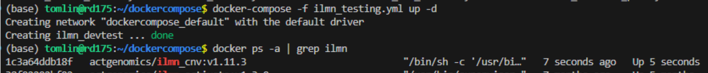

Legacy CNV pipeline handover document
Purpose
Provide a tutorial of how to deploy and troubleshoot during maintenance and testing of Illumina and Torrent legacy CNV pipeline
Files
YAML
/mnt/home/tomlin/dockercompose/
Testing data
/mnt/BI3/Team_workdir/tom_workdir/Validation_input/
Bitbucket Repos
Illumina
Torrent
Docker Images
Deployment
Use the following docker compose template to initiate container
Illumina
Latest version = v1.11.3 (54022ed)
docker-compose -f /mnt/home/tomlin/dockercompose/ilmn_testing.yml up -d
Example of successful deployment
{kind=link}
Torrent
Latest version Onco = v3.2.9 (1a5b490)
docker-compose -f /mnt/home/tomlin/dockercompose/ACTOnco_testing.yml -d
Latest version Drugv4 = v3.0.9 (5ef3649)
docker-compose -f /mnt/home/tomlin/dockercompose/ACTDrugV4_testing.yml
Onco DrugV4
Pipeline execution
When container has been deployed, the following command triggers a job execution.
Illumina
python3 /tools/cnv_app/cnv_pipeline/cnv_pipeline.py -i [RunBarcode] --panel [panelID]
Example output
All four biomarker + plot module should trigger.
Data output in respective Lv2 directory
Torrent
python /home/CNV/script/ACTOnco_CNV_Onco2M7.py -i [RunBarcode] -b FFPE -p Onco2M7pv6
python /home/CNV/script/ACTDrugV4_CNV_PA027M1.py -i [RunBarcode] -b FFPE -p PA027M1
If panel_ID not given, it is detected via the all_seq_list
Troubleshoot
Server DNS Configuration
Server needs to contain necessary DNS for API in /etc/hosts
Otherwise add the following to docker-compose
extra_hosts:
- "actg-sso-back.actgenomics.com=192.168.6.8"
- "actg-sso.actgenomics.com=192.168.6.8"
- "lm-back.actgenomics.com=192.168.6.8"
Mount volumes exist
The mock directory of Lv1 and Lv2 contained test data for pipeline execution
Image building
When building Illumina CNV container, it needs to contain an entry point as it works as a component in the entire pipeline.
The dockerfile to use when building production container:
illumina_cnv_integration/cnv_df/docker_swarm/Dockerfile
For development and local testing, without crontab entrypoint:
illumina_cnv_integration/cnv_df/Dockerfile
Test new data / Debug sample run
When new data is required for testing, a mock directory can be created providing the sample data is already in production volumes
Generate text file with 1-column containing sample UUID
Example UUID : AANB01_502_IDX703503_AA-25-10005
Use custom script to generate mock folder
python3 /mnt/home/tomlin/dev_script/file_files.py \
-f1 [Lv1 DIR] \
-f2 [Lv2 DIR] \
-i [File containing list of UUIDs] \
-o [Output DIR]
This directory will contain a physical copy of Lv1 Lv2 files with samples, which can be mounted to testing container